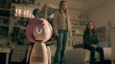
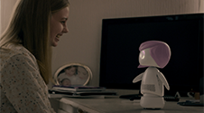
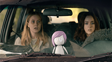

Personajes
  

¿Cuál es tu favorita?
Ashley Too
Muñeca electrónica que encarna la personalidad de Ashley O. Está conectada al cerebro de Ashley, por lo tanto, sabe lo que piensa y siente.
Ashley O
Sensación del pop americano. Vive con su tía Catherine, quien le administra una droga la cual hace que Ashley no se sienta ella misma. Le gustaría librarse de ese mundo para hacer lo que realmente le gusta.
Rachel
Tímida e introvertida. Al haberse mudado al barrio hace poco, todavía le está costando hacer amigos. Es fanática de la estrella pop Ashley O.
Jack
Es la hermana mayor de Rachel. Le cuesta tener una buena relación con su hermana menor. Toca el bajo.
Catherine
Tía de Ashley O. A Catherine le gusta el estilo de vida que consiguió dada la fama de Ashley y hará lo imposible por seguir vendiendo su música.